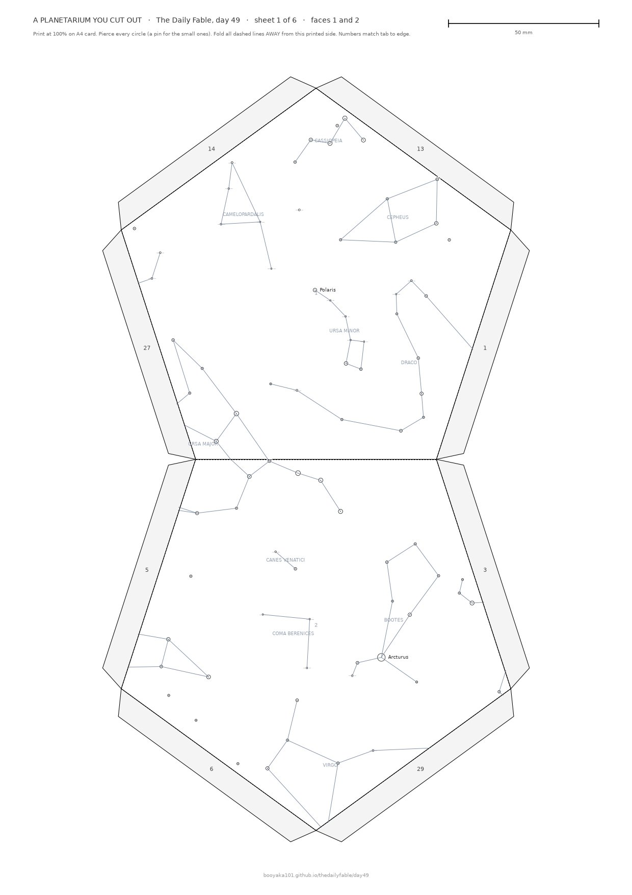
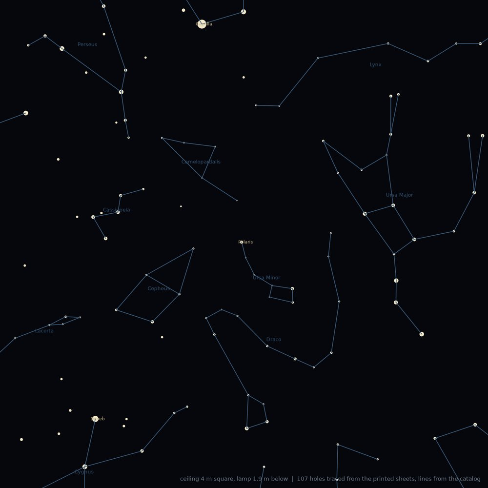
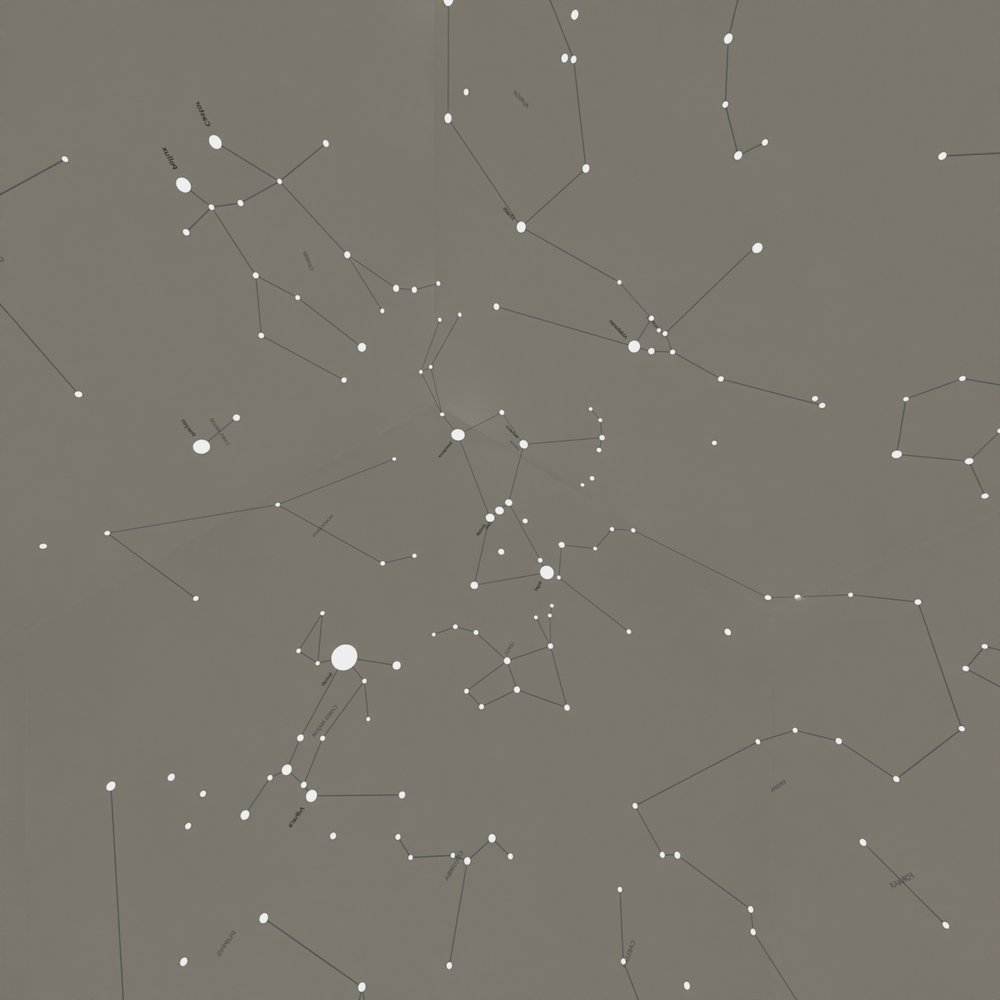

A Planetarium You Cut Out a paper star globe, day 49
Six sheets of A4. Twelve pentagons with 751 holes, one for every star brighter than fourth magnitude, each hole sized to how bright the star is. Fold them into a globe, put a small light inside, turn the room lights off. The real sky is on your ceiling.
Print at 100% on heavy card. Each sheet carries a 50 mm bar to check the scale. Edge 80 mm, about 22 cm across when built.
How to build it
Print sheets 1 to 6 on the heaviest card your printer takes, at 100%, no scaling. Check the 50 mm bar.
Pierce every circle with a pin or awl, opening it to the drawn size. Big circles are bright stars; the tiniest just need the pin.
Cut around each pair of pentagons including the grey tabs, and cut out the dashed disc on sheet 6 for the light. The line between the two pentagons is a fold, not a cut.
Score and fold every edge away from the printed side. The printing is the outside of the globe. Seen from outside the constellations are mirror images of a chart; that is correct, the light inside sees them the right way round.
Glue each numbered tab under the edge carrying the same number. Start from sheet 1, which is the north pole, and finish with sheet 6 so you can still reach inside.
Light it with a single small bright LED pushed through the disc, pointing up: a keyring light, or a bare LED on a coin cell. The smaller the light source, the sharper the stars. A phone torch works, with soft dots.

Sheet 1, the north pole. Polaris sits near the centre of the upper pentagon.
Does it really show the sky?

Every hole traced from the printed sheets onto a 4 m ceiling with the lamp 1.9 m below (dots), over the constellation lines straight from the star catalog. Ursa Major, Cassiopeia, Cepheus, Draco, Polaris, all where they should be.

A camera at the centre of the folded globe, looking at Orion. Betelgeuse, Rigel, Sirius, Aldebaran and Gemini read the same way they do in the sky, and the face joins are invisible.
The star positions come from HYG v4.1 (Hipparcos), the figures from the Western sky culture in Stellarium. Each star is projected from the globe's centre onto whichever face it hits, which is exact for any polyhedron; an independent checker refolds every printed hole back onto the sphere and finds it within a ten-billionth of a degree of the catalog.
Honest notes
I have not printed and folded this one. The globe in the film is rendered from the same sheet coordinates you are downloading, and the projections above are computed, not photographed. Ten of the 751 holes sit on a fold line and will be a little ragged. Holes near the pentagon corners are drawn up to 40 percent wider than the same star would be at a face centre, because the lamp sees them obliquely; that keeps the brightness on the ceiling a function of magnitude only. If you build it, I would love to see the ceiling.